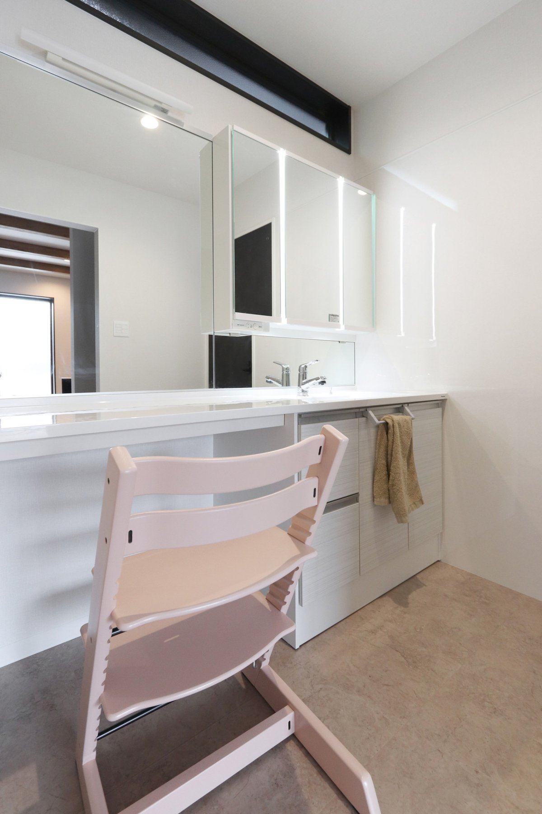

| 所在地 | 奈良市 |
|---|---|
| ご家族 | ご夫婦とお子様 |
| 取材 | 旧サイト掲載の取材原稿より |
〇ConCeptべトングレーcolorで統一された洗練されたお家。
お家の空間に合わせた家具や住宅設備でより一層大人かっこいい、スタイリッシュ空間に惹きつけられます。
お家のスタイルに合う収納スペースやニッチですっきりした暮らしを提案致しました。

もともとマイホームを希望していました。
というのも、主人の仕事部屋の防音部屋が欲しかったんです。
実家をシバサンホームで建てた事もあり、家づくり当初から候補には入っていたんです。
他社に見に行ったりしたんですが、モデルルームの豪華さが、自分達の家で考えてみると、想像がつかなかったり、予算やプランの縛りがきついなぁと思っていました。
細かい部分などは、見学会やモデルルームに行ってしっかりとチェックをしていました。
その中でシバサンホームへ行き、親身に話を聞いてくれたり、スムーズにお話が行き、今でも子供はシバサンホームへ行きたがるくらい、沢山遊んでくれたのも嬉しかったですね。
〇家づくりの進め方実家近くのいい土地を見つけれたのですが、なかなか工事ができなかったりして、今の土地を選びました。予算は高くなったんですけれど…。 タイミングですね。
凄く迷いましたし、値段もグンっと上がるので、建売でも考えれたと思うのですが、どうせなら、自分たちのお家を建てたかったですね。
お家の趣味は少し夫婦で異なっていてどちらかが折れて〜って事が多かったですね。
私は淡いグレーや白や黒のニュアンスカラーがよかったのですが、主人は汚れるのが嫌で、べトングレー一択でしたね。
なので私は間取りを考えました。
夫婦で考えたことをノートにまとめ、聞きたいことはメールでも聞いて、その都度悩みは解決していましたね。
〇重視した部分やお家のイメージまず一番重視した部分は、予算ですね。
その中でも自分たちが気に入ったものに囲まれて生活したいなぁと思いました。
インスタやルームクリップでいいなと思った物をスクショして、夫婦で話あって決めました。
間取りが中々収まらず悩んでいたのですが、結果家全体を大きくしたら解決しました。
いっぱい調べて、選択肢を増やしたことで満足したお家づくりができてよかったです。
金額もオーバーはしましたが…満足しています。
住宅設備に関しては、リクシルなども見に行ったりしたのですが、やはりグラフテクトが気に入りましたね。
かっこよかったし、お友達もめっちゃいいと褒めてくれるので、選んで良かったなと思っています。
家具は引っ越しに合わせてネットで検索し、べトングレー基準で選びました。
２型キッチンで広さを確保してダイニングテーブルを置きました。
ティッシュケースや小さな小物まで徹底して揃えました。
欲しかった防音室もきっちりとあったり、子供が遊びやすい和室を家事や育児がしやすい場所に配置してもらったり。
ごろ寝もしやすく子育てがかなり楽になりました。
今で満足していますが、家の裏を公園化したいのと野菜を育てたりいろいろ充実させたいと思っています。
〇これからお家づくりする方へ一番大事だと感じたのは、情報収集ですね。
必ずしも正解ではないですが、自分たちの正解が何なのかを選ぶ為に選択肢を増やせるので、情報を得る事は大事だと思いました。
自分たちのお家づくりのテーマを夫婦や家族で話あい、その中で譲れるものと譲れないものをすり合わせし、優先順位をつけていました。
住設関係のものはしっかりとブログなどで機能や使い勝手、確認事項も読みながら選びました。
ぶつかる事もあったり、今でもこうしたかったという思いは少しありますが、それでも今のこのお家は気にいっていますし、建てて良かったと思っています。